The Okapi and Giraffe are the only living remnants of the Giraffide family. Okapi are an endangered species Okapis tend to inhabit higher altitudes, anywhere from 1,600-4,900 ft.
 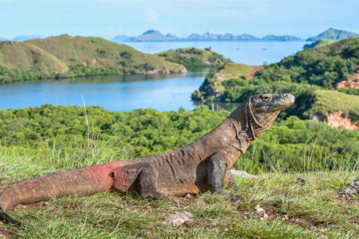
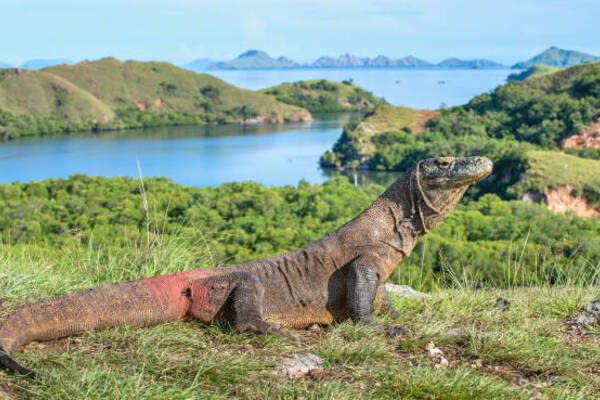
 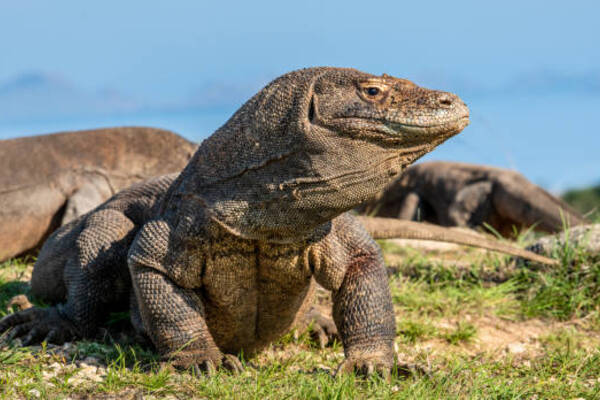
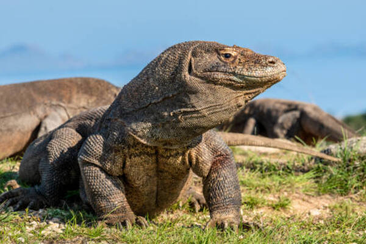

Komodo Dragons are the largest living species of lizard. Komodo Dragons are apex predators. Komodo Dragons are an endangered species.
 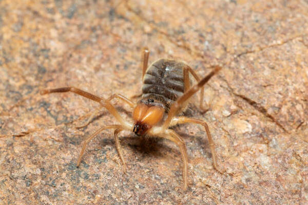
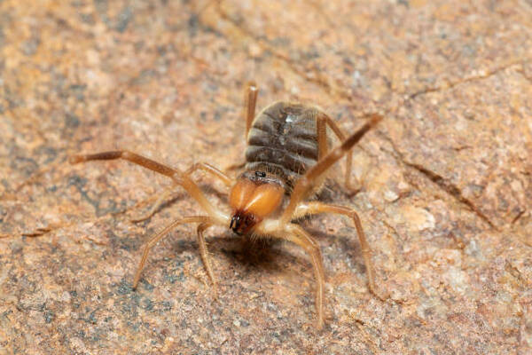
 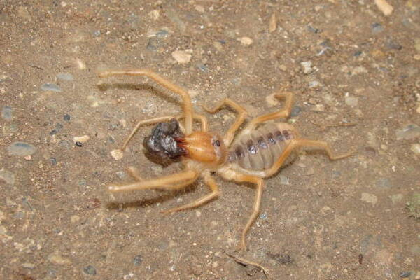
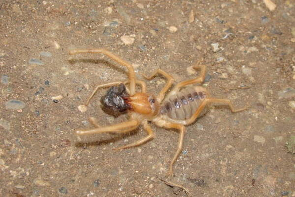

Despite their name they are not actually spiders They find their prey by tapping their pedipalps(mouth parts) on the ground. They do not breathe like other scorpions or spiders. Using a complex tracheal system consisting of holes covering the span of their bodies
 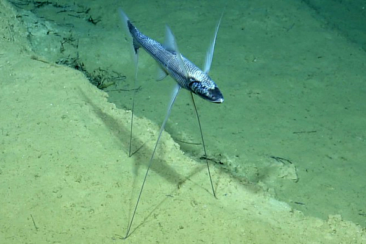
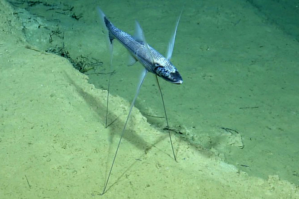


The Tripod Fish waits on the ocean floor for food to come to it. It uses its long fin rays to knock fish that could be floating by into it's mouth. Tripod Fish can produce both eggs, and sperm, making it capable of reproducing entirely on it's on.


Giant Salamanders are the largest amphibian species They are fully aquatic, but lack any real swimming ability. Was mistaken for a human being in 1726 by a swiss physician. He thought that the skeleton was remains from the biblical flood.

 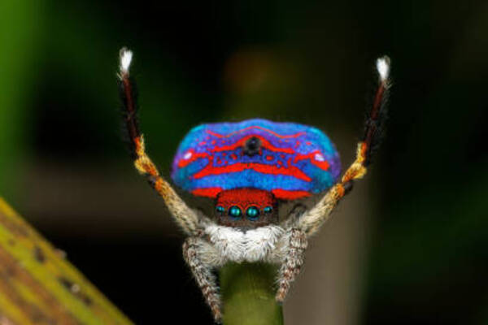
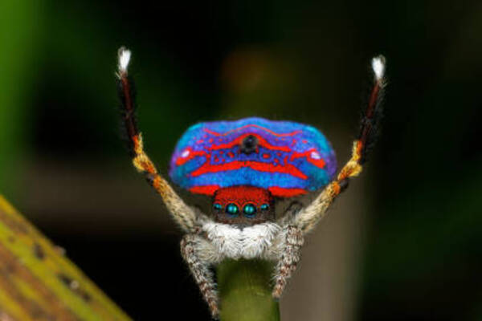


The Peacock Spider can see the full visible range of light, as well as the ultraviolet range. If the male continues to dance for an uninterested partner she will attempt to kill him.